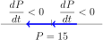

is a particularly nice separable ODE since the right hand side depends only on the unknown function \(P\text{.}\) So we can write \(P' = f(P)\text{,}\) where \(f(P) = kP(M-P)\text{.}\) ODEs like this (where the independent variable does not appear explicitly) are called autonomous ODEs.
Autonomous ODEs like \(\dv{x}{t} = f(x)\) are useful because the behavior of their solutions can be determined qualitatively, without actually solving the ODE. This is done by looking for the constant solutions of the ODE, that is, solutions of the form \(x = c\text{.}\) For any such solution, we must have \(f(c) = 0\) as well. These solutions (i.e., the solutions of \(f(x) = 0\)) are called the critical points or equilibrium solutions of the ODE. These solutions completely determine the long-term behavior of every other solution.
Example1.7.1Finding Equilibrium Solutions
Find the equilibrium solutions of \(\dv{x}{t} = -x^{2} + 7x - 10\text{.}\)
We need to solve the equation \(-x^{2} + 7x - 10 = 0\text{.}\) Thankfully, we can factor this to get \((2-x)(x-5) = 0\text{,}\) and so the equilibrium solutions are \(x = 2,5\text{.}\)
Definition1.7.2Stability of Solutions
A critical point is stable if solutions that start "near" the point stay near it. A critical point is unstable if solutions that start "near" the point can diverge away from it.
Example1.7.3Determining the Stability of Solutions
What are the stable critical points of \(\dv{x}{t} = -x^{2} + 7x - 10\text{?}\)
We already know that the critical points are \(x = 2, 5\text{.}\) We can determine their stability by making use of a phase diagram, which is essentially a sign chart for \(f(x) = -x^{2} + 7x - 10\text{:}\)
Figure1.7.4
The phase diagram for \(x' = f(x).\)
This shows us that solutions that begin near \(x = 2\) tend to move away from \(x = 2\text{,}\) which solutions near \(x = 5\) tend to move towards \(x = 5\text{.}\) So \(x = 2\) is unstable and \(x = 5\) is stable.
Example1.7.5Determining a Sustainable Population
Consider a population of fish that obeys the logistic equation
where \(P(t)\) is the population of fish (in thousands) after \(t\) years. Suppose that the population is also harvested at some rate \(h\) (in thousands per year). What is the maximum sustainable rate of harvesting?
To account for the harvesting, we need to modify the ODE:
\begin{equation*}
\dv{P}{t} = 2P(30 - P) - h.
\end{equation*}
The harvesting will be sustainable as long as the population does not become extinct. To determine this long term behavior, we'll find the critical points and set up a phase diagram.
The critical points are given by
\begin{equation*}
P = 15 \pm \sqrt{3600 - 8h}
\end{equation*}
by the quadratic formula. We now have three cases to consider: \(3600 - 8h \lt 0, 3600 - 8h = 0, 3600 - 8h \gt 0.\) In terms of \(h\text{,}\) these reduce to \(h \lt 450, h = 450, h \gt 450\text{.}\)
In the first case, if \(h \lt 450\) then we have two positive, real critical points:
So we see that \(c_{1}\) is unstable while \(c_{2}\) is stable. In particular, as long as
P\geq c_{1} = 15 - \sqrt{3600 - 8h}
, then the rate of harvesting is sustainable.
Now assume that \(h = 450\text{.}\) Then we have only one equilibrium solution: \(c = 15\text{.}\) The corresponding phase diagram is

We interpret the phase diagram as follows: if \(P\) is less than
15,000
then the population will collapse to extinction. Otherwise, the population will stabilize at \(15,000\text{.}\) This type of critical point is often called semi-stable.
Finally, consider the case \(h \gt 450\text{.}\) Then we have no (real) critical points. Since imaginary populations don't make sense in this model, there is no sustainable population. No matter how large the initial population, it will eventually go extinct if harvested at a rate greater than \(450\text{.}\)
By the above, the largest sustainable harvesting rate is \(h = 450,\) as long as \(P_{0}\geq 15\text{.}\)